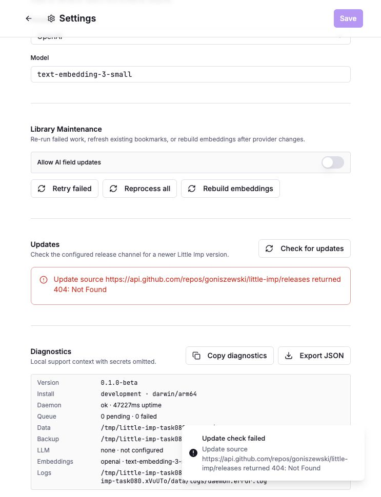
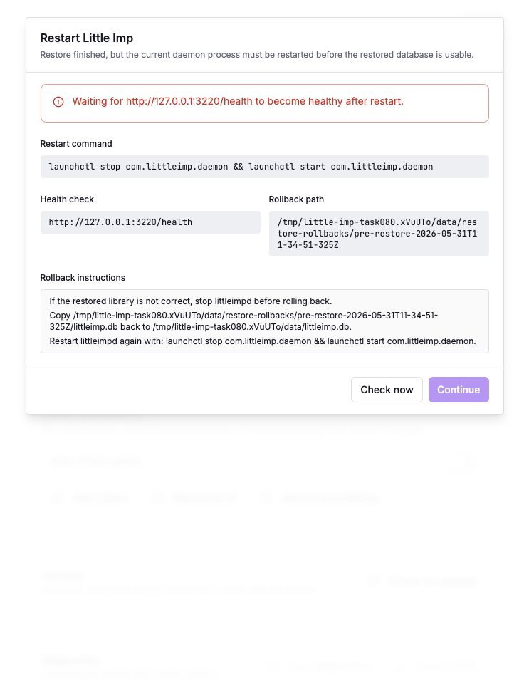
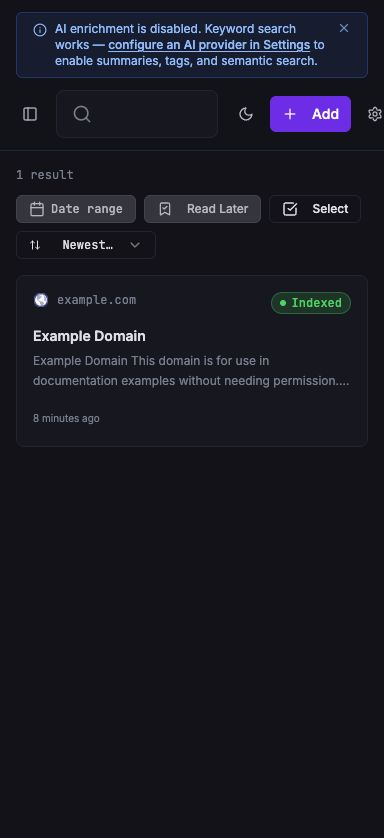

Grimoire Task Report
TASK-080 First-User UX Smoke Pass

Before
The shared workstation already had an installed daemon on 127.0.0.1:3210 with existing user data. The frontend API base was hardcoded to that daemon, so a fresh-data browser smoke pass was blocked without stopping the user-owned service.
Problem
TASK-080 required a real first-user pass over save, search, import, backup, encrypted package, restore, diagnostics, update-check, and degraded-AI states. Mocked Playwright coverage existed, but it did not satisfy the fresh local data requirement.
Changes Added
- Added a loopback-only
VITE_DAEMON_URLoverride while preserving the defaulthttp://127.0.0.1:3210. - Refreshed Settings diagnostics after backup creation so backup writability no longer stays stale.
- Expanded update-check errors to include the sanitized release source URL and HTTP status.
- Moved TASK-080 to done with real isolated smoke evidence.
Result
A fresh daemon ran from /tmp/little-imp-task080.xVuUTo/data on port 3220, and the Vite app targeted it through VITE_DAEMON_URL. The installed daemon on 3210 stayed untouched and healthy.
Verification
- Focused frontend tests:
npm run test -- src/lib/api.test.tsandnpm run test -- src/pages/Settings.test.tsx. - Focused daemon test:
cd daemon && bun test src/test/integration/updates.test.ts. - Real smoke: add/search/detail, import, backup create/verify, encrypted package create/verify, restore, restart recovery, diagnostics, update-check messaging.
- Visual checks: desktop library, mobile library, Settings diagnostics/update state, and restore recovery dialog.
Links
Additional Screenshots



Implementation Notes
The override is intentionally constrained to loopback hosts. This keeps the local-first security posture intact while allowing repeatable isolated smoke passes on alternate local ports.
The update-check copy still reports the real publication-gated failure; it does not claim an update is available or that the public release path is healthy.
Files Changed
src/lib/api.tssrc/lib/api.test.tssrc/pages/Settings.tsxsrc/pages/Settings.test.tsxdaemon/src/update/service.tsdaemon/src/test/integration/updates.test.tstasks/README.mdtasks/done/TASK-080-mvp-first-user-ux-smoke-pass.md